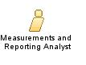

| Role: Measurements and Reporting Analyst (040853) |
 |
|
Relationships
 |
Main Description
This role also may provide analysis and support on the use and interpretation of the measurement and reporting data. They define plans for data collection, including the types of data and time of data capture, coordinate activities to collect, analyze, and report the information, and coordinate activities to ensure the external audit readiness of measurement data if required. |
Staffing
| Skills |
|
|---|
More Information
| Supporting Materials |
|---|
| © Copyright IBM Corp. 1987, 2012 All Rights Reserved Property of IBM These materials are intended only for use as part of an IBM engagement |